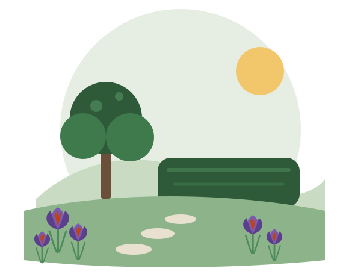

Tuinaanleg
Een nieuwe tuin, of een bestaande tuin die een nieuwe start verdient. Mathieu denkt mee en legt hem aan.
Meer over tuinaanlegMathieu Vergote legt tuinen aan en houdt ze netjes bij, voor particulieren en bedrijven. Van hagen snoeien en bomen bijwerken tot het onderhoud van een volledige groenzone. Het groenafval neemt hij meteen mee.

Een nieuwe tuin, of een bestaande tuin die een nieuwe start verdient. Mathieu denkt mee en legt hem aan.
Meer over tuinaanlegHagen, bomen, struiken en groenzones: eenmalig of op regelmatige basis netjes onderhouden.
Meer over tuinonderhoudBel of mail Mathieu. Hij bekijkt graag wat er mogelijk is.